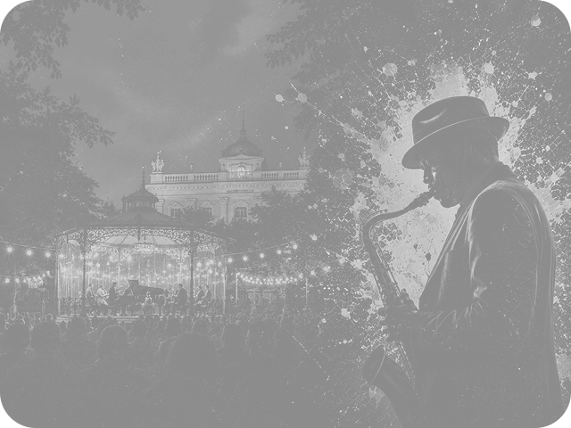

Swing
Ритм больших оркестров
Главная / Жанры / Джаз
От камерных клубов Нового Орлеана
до главных сцен мировых фестивалей.
Ритм больших оркестров
Скорость и импровизация
Спокойный сложный звук
Энергия рока и фанка
Традиция и электроника
Труба · Cool Jazz
Голос · Swing
Саксофон · Bebop
Труба · New Orleans

08 июня · Сад «Эрмитаж»